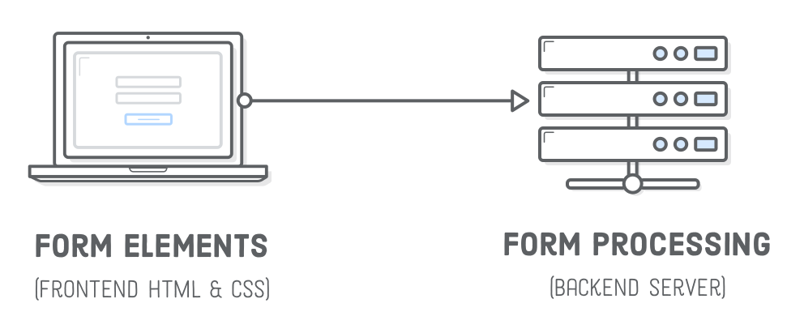

Форми дозволяють отримувати інформацію від відвідувачів веб-сторінки. Списки розсилання, контактні дані, профіль користувача, логін і реєстрація, коментарі в блогах - все це реалізується за допомогою форм та їх елементів.

Форми - це «грошові сторінки», завдяки яким інтернет-магазини продають свої товари, а онлайн-сервіси отримують оплату за надані послуги. Компанії вимірюють успіх свого веб-сайту ефективністю його форм, тому що вони відповідають на такі питання, як «скільки потенційних клієнтів наш веб-сайт відправив відділу продажів?» і «скільки людей підписалося на наш продукт минулого тижня?». Тому форми постійно рефакторяться і покращуються.
Функціональна HTML-форма складається з двох частин: інтерфейс користувача і сервер (бекенд). Перше - це зовнішній вигляд форми (розмітка і оформлення), а друге - код обробки введених даних (валідація, зберігання даних, відправлення електронної пошти тощо).
Увага:
Зараз наше завдання навчитися робити інтерфейс, тобто розмічати і
оформляти елементи форми. Вивчення обробки даних виходить за рамки курсу
верстки та вимагає знання браузерних і серверних мов програмування
(JavaScript, Node.js, Python, PHP тощо).